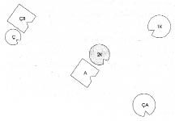

HELLINGER Verilen aranın ardından Rita’ya Şimdi senin köken aileni dizeceğim.
Gruba Enerjinin en yüksek düzeyde olduğu yerde çalışılır. Bu nedenle onunla başlıyorum.
HELLINGER Rita’ya Evli misin?
RITA Evet.
HELLINGER Çocuğun var mı?
RITA Evlat edindiğim bir çocuğum var.
HELLINGER Evlat mı edindiğin? Neden?
RITA Çocuk sahibi olamadığım ve bunu hem kocam hem de ben istediğimiz için.
HELLINGER Çocuk da istiyor muydu peki bunu?
RITA Sanıyorum evet.
HELLINGER Yanına aldığında kaç yaşındaydı?
RITA Ailemize geldiğinde beş günlüktü.
HELLINGER Neden size geldi?
RITA Annesi evlatlık verdiği için. Hastanedeydi, beni orada bekliyordu.
HELLINGER Ya çocuğun babası?
RITA Annesi adını vermedi, belgelerde filan da geçmiyor ismi.
HELLINGER Gruba Tuhaf! Erkekler bizim toplumumuzda geçer akçe değil. Bir de ataerkillikten dem vurulur!
Rita’ya Senin çocuk sahibi olamayacağın evlenmeden önce biliniyor muydu?
RITA Hayır.
HELLINGER Yani ancak evlendikten sonra ortaya çıktı, öyle mi?
RITA Evet.
HELLINGER Kocanın buna tepkisi ne oldu?
RITA Benim çocuk sahibi olamamam onun için sorun değildi. Bu konuda benimle ilişkisini hiçbir zaman sorgulamadı.
HELLINGER Gruba Eşlerden biri çocuk sahibi olamadığında diğerini tutmaya hakkı yoktur. Diğeri buna rağmen onunla kalmaya karar vermişse bunun özellikle onurlandırılması gerekir. Bu önemlidir. O zaman durum açık ve düzen içindedir.
RITA Ona bundan ötürü çok minnettarım.
HELLINGER Minnet iki ucu keskin bıçaktır.
RITA Evet, bunu kabul ediyorum.
HELLINGER Doğru sözcük onurlandırmaktır. O zaman yolundadır. Bu durum dolayısıyla sen kocandan daha az hak sahibisin. Bu böyle.
BAŞKA BİR KATILIMCI (KADIN) Senin diğer zamanlarda söylediğin gibi eğer çift ilişkisi ana babalığın önünde geliyorsa bunu anlayamadım. Burada söz konusu olan ortak bir sevgi ilişkisi.
HELLINGER Karşı çıkışın bir şey getiriyor mu?
KATILIMCI Evet, belki getiriyor.
HELLINGER Hayır, yalnızca bir şey alıp götürüyor.
Gruba Bu söylediğiyle Rita’ya yardımcı oldu mu? -Ciddiyeti aldı götürdü. Böyle itirazlarla yapılabilir bu. Son derece risklidir. Kimileri terapiyi itirazlar biçiminde yapar. Birisi onlara bir sorunla geldiğinde bütün yaptıkları, örneğin “yok canım, o kadar da kötü değil durum” diyerek karşı çıkmaktır.
KATILIMCI Ben Rita’nın soruları ya da söylediklerine karşı çıkmadım, yalnızca senin durumu yorumlayışınaydı itirazım.
HELLINGER Bir itiraz daha.
Kadın güler.
HELLINGER Rita’ya Önce güncel aileni dizelim. Sen ya da kocan daha önce bir evlilik ya da ciddi bir ilişki yaşadınız mı?
RITA Kocam evliydi.
HELLINGER Bu evlilikten çocukları var mı?
RITA Hayır.
HELLINGER Neden ayrıldı?
RITA Bildiğim kadarıyla anlaşamamışlar. Kocamın ifadesiyle –benim de bütün bildiğim bu- bir yükümlülük duygusuyla evlenmiş.
HELLINGER Öyle mi?
RITA O öyle söylüyor.
HELLINGER Evet, o öyle söylüyor.
Grupta gülüşmeler.
HELLINGER O zaman ilk karısına, kocana, sana, evlat edindiğiniz çocuğa ve onun öz ana babasına ihtiyacımız var. Sistem bunlardan oluşuyor. Evlat edindiğiniz çocuk kaç yaşında?
RITA Beş.
HELLINGER Kız mı, oğlan mı?
RITA Kız.
Rita aileyi dizmeye koyulur.
HELLINGER Gruba Dizim yapanların içsel olarak yoğunlaşarak mı yoksa önceden oluşturdukları bir resme göre mi dizim yaptıklarına dikkat edin. Kişinin bunu ciddi bir şekilde yapmasına dikkat etmek, yoksa dizimi kesmek gerekir. Burada hiçbir şey yarım bırakılamaz. Bu son derece ciddi bir iştir ve ancak ciddi bir şekilde yapılırsa yürür. Kişinin dizimi nasıl yaptığı anında görülebilir.
HELLINGER Rita’ya Şimdi yoğunlaşmış bir ciddiyetle yeniden diz.
1. Resim
A Adam
1K İlk karısı
2K İkinci karısı (=Rita)
Ç Çocuk, evlat edinilmiş, kız
ÇB Çocuğun babası
ÇA Çocuğun annesi
HELLINGER Gruba Dizilen kişilerin bakışlarının nereye yöneldiğini fark ediyor musunuz? Hepsi de dışlanan babaya bakıyor. Çözümün anahtarı orada.
Adam nasıl?
ADAM Oraya, ilk karıma doğru bir gerilim hissediyorum. Onun ön tarafta olması gerektiği duygusu var içimde.
HELLINGER Sen de onun yanına geçebilirsin. Yanına geç.
2. Resim
HELLINGER Adama Böyle nasıl?
ADAM Daha iyi. Öteki türlü bana fazla yakındı.
HELLINGER İlk eş nasıl?
İLK EŞ Ben daha iyiyim. Daha önce bu aileye çok büyük bir öfke duyuyordum.
HELLINGER Rita’nın temsilcisine İkinci eş nasıl?
İKİNCİ EŞ Orada duran kişi beni büyülüyor. Çocuğun babasını kastediyor. Sırtımda algılayamadığım bir şey var. Kocamın arkamda durması tuhaf bir şekilde nahoş gelmiyor.
HELLINGER Evlat edinilen çocuk nasıl?
ÇOCUK Biraz karışık. Enerjisiz.
HELLINGER Çocuğun annesi nasıl?
ANNE İçimden uzaklaşmak, gitmek geliyor ama yapamıyorum. Kendimi bağlı hissediyorum.
Hellinger resmi değiştirir.
3. Resim
HELLINGER Bu, çözüm.
Çocuğun babası nasıl?
BABA Başta benim buraya ait olmadığım duygusu vardı. Diğer adam geriye doğru gittiğinde çocuğu evlat eden kadınla bir bağlantı oluştu. Çocuk buraya geldiğinde onun benim çocuğum olduğunun bilincine ilk kez varabildim.
HELLINGER Çocuğun annesi nasıl?
ANNE Ben çok daha iyiyim. Biraz daha uzaklaşmak isterdim.
HELLINGER İstediğin gibi hareket et.
Biraz daha öne çıkarak diğerlerinden uzaklaşır.
HELLINGER Gruba Bu kadın haklarını elinden kaçırdı. Çocuğunu evlatlık veren kadın annelik haklarını kaybetti. Çocuk üzerinde hak sahibi olan babası ve babanın ailesi. Çocuk yalnızca babasına değil, babasının ailesine de ait; babanın ebeveynine, kardeşlerine. Çocuğun ait olduğu yer orası. Yalnızca babası değil. Bu da göz önünde bulundurulmak zorunda. Sadece baba değil, babanın ebeveyni ve kardeşleri de aranmalı. Çocuk onların yanında. Çünkü yalnızca babasına değil, bir sisteme de ait. Ama bu sistem, (anneye işaret ederek) annenin sistemi bütün haklarını kaybetti.
Siz de görüyorsunuz, Rita’nın kocası özgür değil. Bu çok açık. Özgür değil. İlk eşinden ayrılmamış.
İLK EŞ İkinci eş arkasını döndüğünde artık buraya ait olmadığım duygusuna kapıldım. Burası benim için doğru olan yer değil.
HELLINGER Adama Sen orada nasılsın?
ADAM Üçü arasında benim için en iyi yer burası. Ben çok iyiyim. İlk yerimde ikinci karımla en az temas halindeydim. Burada, ilk eşimin yanında hissedilir ölçüde daha iyiydim. Şimdi, ikinci karım yüzünü döndüğünde ise onunla doğrudan temas içinde olabiliyorum. Böyle iyiyim. Her şeyden önce de çocukla kendimi iyi hissediyorum. Onun babasının yanında durması beni müthiş rahatlattı.
HELLINGER Onun yeri orası. Bu açık. Şimdi ikinci eşinin yanına geç.
4. Resim

HELLINGER Rita’nın temsilcisine Nasılsın?
İKİNCİ EŞ Kocam oraya geçeli çok daha iyiyim. Çok yalnızdım. Yalnızca oradaki ilk eş beni tedirgin ediyor.
HELLINGER İlk eşe Adam ilk eşinin yanına geçtiğinde sen geri çekildin. Şimdi senin için doğru olan yeri sınayarak bul.
İLK EŞ Daha da uzaklaşmak isterdim.
HELLINGER Gruba İkinci bir ilişki olduğunda, erkeğin buradaki gibi ikinci bir eşi olduğunda ikinci eşin, erkek ve onun ilk eşi arasına geçmesi gerekir. Bu cesaret ister. Ancak bu durumda ilk eş ilişkiyi bırakır. Ama eğer erkek iki kadının arasında durursa bu onu ilk eşe doğru çeker.
Çocuk nasıl şimdi?
ÇOCUK İyi. Bu kadar uzak olmanın beni hiç de rahatsız etmemesine hayret ediyorum. Daha öncekine kıyasla burada daha iyiyim.
HELLINGER Rita’ya Gördün mü, evlat edinme iyi bir iş olmamış.
RITA Bu ne anlama geliyor?
HELLINGER Bunun ne anlama geldiğini gördük. Durumu düzene sokmak için burada gördüğünü yapmak zorundasın. Eğer istersen dizimdeki yerini alabilirsin.
RITA Dizimde kendi yerini aldıktan sonra Burada kendimi iyi hissetmiyorum.
HELLINGER Hissetmiyor musun?
RITA Çünkü çocukla aramda hiçbir ilişki yok.
HELLINGER Seni bu durumdan kurtarmanın yolu yok.
Uzun bir ara
HELLINGER Öyle.
RITA Nasıl?
HELLINGER Evet, öyle! Seni bu durumdan kurtarmanın yolu yok, dedim. Tamam, bu kadar.